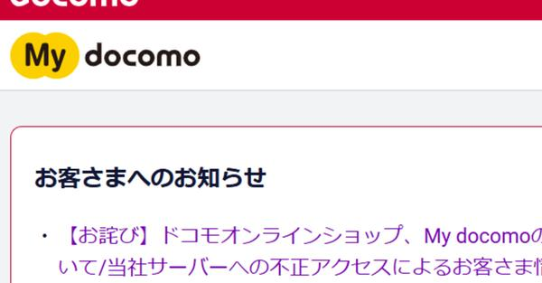
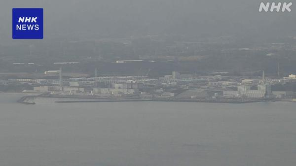
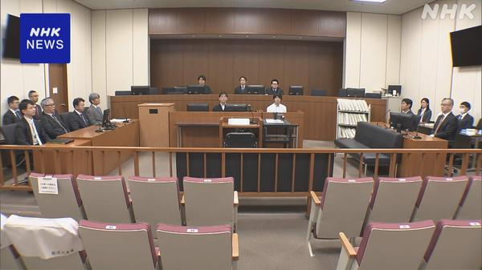
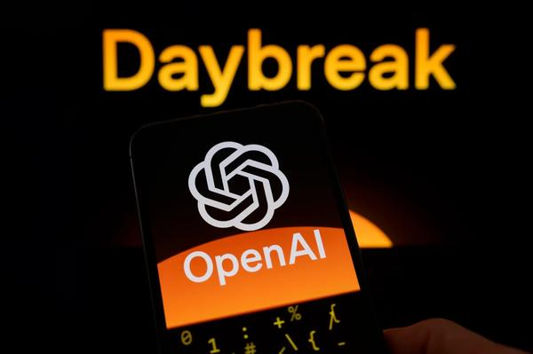
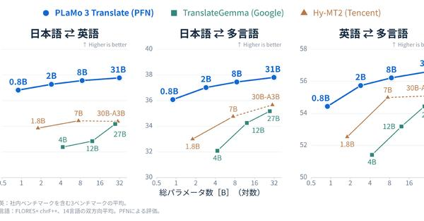
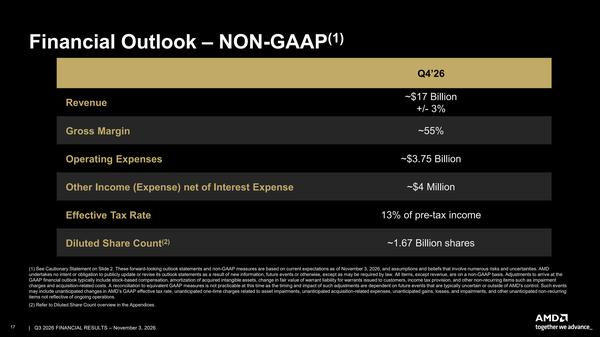
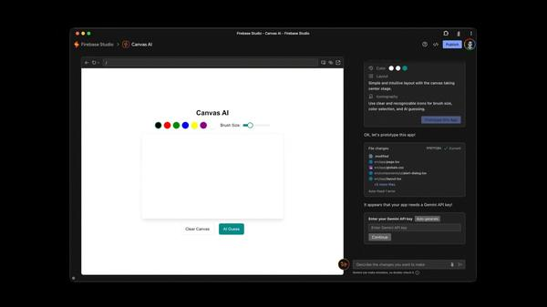
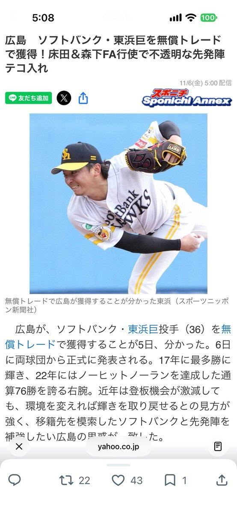
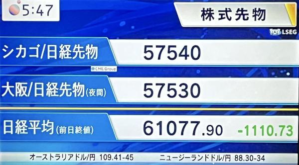

朝のニュースまとめ
2026年11月6日（金）
🇯🇵 日本の主要ニュース
消費税減税法案、与党はきょう採決の構え 野党は「具体像あいまい」と反発
食料品の消費税減税関連法案をめぐり、衆院委員会で高市首相も出席して質疑が行われます。与党は採決を目指す一方、野党は支援金制度の具体像が不明確だと批判しています。
出典：NHK
政府、サイバー対策で予備費から約100億円を支出へ 緊急パッケージ決定へ
不正アクセスによる情報漏えいが相次ぐ中、政府は6日にも緊急対策パッケージを決め、警察のシステム整備などに今年度予算の予備費から約100億円を支出する方針です。
出典：NHK

ドコモ不正アクセス、最大約30万件の顧客情報流出 My docomoなど緊急メンテ継続NTTドコモは外部からの不正アクセスでオンライン窓口などから最大約30万件の個人情報が流出したと明らかにしました。My docomoなどは緊急メンテナンスが続き、再開のめどは立っていません。
出典：ITmedia
アイリスオーヤマ、通販サイト不正アクセスで約770万人分の個人情報漏えいの可能性
大手生活用品メーカーのアイリスオーヤマは、通販サイトが不正アクセスを受け、およそ770万人分の個人情報が漏えいした可能性があると発表しました。
出典：NHK
ロシア、JT関連工場4拠点を一時的にロシア企業の管理下へ プーチン大統領令
プーチン大統領は、JTの海外子会社がロシア国内に保有する4つの生産拠点を、一時的にロシア企業の管理下に置く大統領令に署名しました。
出典：NHK
自転車の青切符、半年間で約1万6000件 「ながらスマホ」が4割
ことし4月に始まった自転車の反則金通告（青切符）は半年間で約1万6000件にのぼり、スマートフォンを見ながらの運転が全体の約4割を占めました。
出典：NHK

原発賠償の東電支援15兆円余り、回収に最長あと39年 会計検査院が試算福島第一原発事故の賠償などで国が東京電力に支援している15兆円余りの資金回収に、最長であと39年かかるとの試算を会計検査院が公表しました。
出典：NHK
日本製紙、熊本地震で被災の八代工場は生産再開を断念 拠点は維持へ
ことし7月の熊本地震で被災した日本製紙の八代工場について、紙・パルプ生産の再開を断念する方針が固まりました。新たな事業などで拠点は維持する方針です。
出典：NHK
日仏首脳が電話会談、高市首相がEUのEV優遇措置検討に「強い懸念」
高市首相はマクロン大統領と電話会談し、EU域内で生産されたEVへの優遇措置検討に強い懸念を伝え、フランス側に適切な対応を求めました。
出典：NHK

洋上風力汚職、秋本元衆院議員に懲役6年を求刑洋上風力発電をめぐる汚職事件で受託収賄などの罪に問われている秋本真利元衆院議員の裁判で、検察は「職務への信頼を著しく害した」として懲役6年を求刑しました。
出典：NHK
🌍 世界の主要ニュース
ナスダック5％超下落、NYダウも大幅安 中間選挙後のAI・データセンター規制強化を懸念
5日のNY株式市場は半導体などハイテク株に売りが広がり、ナスダック総合は5％超の大幅下落となりました。民主党大勝でAIやデータセンターへの規制強化が意識されています。
出典：NHK／BBC
フランスで再び大規模デモ、物価高対策を訴え 一部で高校火災など混乱も
物価高対策などを求める大規模デモがフランス各地で行われ、内務省推計で約60万人が参加しました。指定外のデモや高校火災など混乱も見られました。
出典：NHK／BBC
パラグアイのペニャ大統領が辞任表明 関係の深い金融機関の破綻を受け
南米パラグアイのペニャ大統領は、自身と関係が深い大手金融機関の経営破綻をめぐる責任追及を受け、5日に辞任を表明しました。
出典：NHK／BBC
欧州の旅客機に爆破予告が相次ぐ、少なくとも21便に影響 英政府は「悪意あるデマ」
ヨーロッパで運航する旅客機への爆破予告が再び相次ぎ、少なくとも21便が行き先変更などの影響を受けました。これまでのところ爆発物は見つかっていません。
出典：NHK／BBC
英中銀が0.25％利上げ、3年3か月ぶり 中東情勢を受けた物価抑制へ
イングランド銀行は政策金利を0.25％引き上げると発表しました。利上げは3年3か月ぶりで、中東情勢を背景にした物価上昇を抑え込むねらいです。
出典：NHK
メラニア夫人、露ウ当局者をホワイトハウスに招き「局地停戦を永続平和へ」
ロシアとウクライナの局地的な停戦を仲介したとされるメラニア夫人が、交渉に関わった両国代表を招き、停戦経験を和平の機運につなげる期待を示しました。
出典：NHK／BBC
カリフォルニア州知事、死刑囚548人の減刑を決定 全米最多の死刑囚を抱える州
カリフォルニア州のニューサム知事は、州内の死刑囚548人全員の刑を減刑すると発表しました。同州は歴史的に全米で最多の死刑囚を抱えてきました。
出典：BBC
米ナスダック5％急落、NYダウ約1800ドル安 AI株が総崩れ
中間選挙後の規制懸念も重なり、ハイテク株を中心に売りが加速。日経によるとNYダウは約1800ドル安、ナスダックは5％急落しました。
出典：日本経済新聞
小泉防衛相、ウクライナ国防相と初会談 「公正で永続的な平和」へ連携
小泉防衛相はウクライナのフマラ国防相とオンラインで初めて会談し、公正かつ永続的な平和の実現に向け国際社会と連携していく考えを伝えました。
出典：NHK
🤖 AIニュース
OpenAI、データセンター立地地域への約束と政策提言を発表 電力費の全額負担など
OpenAIはAI向けデータセンター（Compute Campus）の建設・運営に関し、電力などインフラ費用の全額負担や公職者との原則的なNDA不使用などを盛り込んだ地域社会への約束と政策提言を発表しました。
出典：ITmedia
 Airbnb、2027年前半にAI旅行エージェントを投入へ
Airbnb、2027年前半にAI旅行エージェントを投入へAirbnbは、旅程の計画や比較、予約管理、現地サポートなどを担うAIエージェントを2027年前半に投入すると明らかにしました。
出典：TechCrunch
Meta、米ユーザー向けにMuse AIアバターとのビデオ通話を開始
Metaは、カスタマイズ可能なアニメーションアバター「Muse」とリアルタイムでビデオ通話できる機能を米ユーザー向けに公開しました。
出典：TechCrunch／The Verge
Claudeに家計分析機能「Personal Finance」、銀行口座と連携
Anthropicは、Plaid経由で銀行・カード口座をつなぎ、支出の質問に答えられる「Personal Finance」機能をClaudeに追加しました。
出典：TechCrunch／The Verge

OpenAI、サイバーセキュリティ特化モデルを発表 他社への不正侵入抑制を強調OpenAIはサイバーセキュリティ向けの新モデルを公開し、デジタルインフラ防護に寄与する一方で他社へのハッキングを抑え込む設計だと説明しています。
出典：TechCrunch／The Verge
Dropbox、AI向けストレージのTigris Dataを約3.5億ドルで買収
Dropboxは、開発者向けAIインフラ強化のためTigris Dataを約3.5億ドルで買収すると発表。DBX Agent Cloudの開発を後押しする見込みです。
出典：TechCrunch

PFN、翻訳特化LLM「PLaMo 3 Translate」をオープンウェイト公開Preferred Networksは、0.8〜31Bの4サイズで「世界最高水準」の性能をうたう翻訳特化型LLMをオープンウェイトで公開し、オンデバイスにも対応します。
出典：ITmedia
フジテレビ、2027年10月めどに全ドラマでAI活用できる体制へ
フジテレビは制作する全ドラマでAIを活用できる体制を2027年10月めどに整えると発表。「救命病棟24時」などで先行導入を進めています。
出典：ITmedia
Meta、中間選挙でデータセンター反対が強まりAI拡大が難しくなると警告
米中間選挙でデータセンター建設への反発が超党派で広がったことを受け、Metaは将来のAI投資への影響を警告しました。
出典：TechCrunch
OpenAI社長、2027年にIPO準備が整う可能性に言及
OpenAIのグレッグ・ブロックマン社長は、WSJのテック会議で、同社が2027年に株式公開の準備を整えられる可能性があるとの見方を示しました。
出典：TechCrunch
💻 PC・ガジェットニュース
ドコモの全国通信障害が復旧 原因は5G SA契約者を収容する交換機の輻輳
5日午前から続いたNTTドコモの通信障害は全復旧しました。原因は5G SA契約者を収容する交換機の輻輳で、音声・データ・SMSが利用しづらい状態が続いていました。
出典：ITmedia
Bose、S1 Pro用バッテリーパックをリコール 過熱・火災のおそれ
BoseはポータブルスピーカーS1 Pro用バッテリーパックに過熱・火災のリスクがあるとして、米加で67万台超をリコールすると発表しました。
出典：Engadget
Warby Parker、GoogleのAndroid XRスマートグラス発表が「来週」と匂わせる
眼鏡ブランドWarby Parkerの投稿から、Googleの「Intelligent Eyewear」（Android XR対応スマートグラス）の発表が近いとの観測が広がっています。
出典：Engadget
iOS 27.3ベータでiPhone Duoに「Reachability」、片手操作を支援
折りたたみiPhone Duo向けに、画面上部の操作を手前に引き寄せるアクセシビリティ機能「Reachability」がiOS 27.3ベータで追加されました。
出典：Engadget
Xbox PCアプリが高速化、起動が最大約60％速く Insider向けに配信
MicrosoftはXbox PCアプリの更新をInsider向けに配信開始。起動が最大約60％速くなるなど、動作の改善を進めています。
出典：Engadget
MSI、Ryzen 9 9955HX3DとRTX 5090搭載の18型ゲーミングノートを投入
MSIは「Raider A18 HX」シリーズに、Ryzen 9 9955HX3DとGeForce RTX 5090 Laptop GPUを組み合わせた上位モデルを追加します。
出典：PC Watch

AMD、2026年Q4売上高でIntelを上回る見通し データセンター好調決算見通しによれば、AMDの2026年第4四半期売上高はデータセンター向けが牽引し、Intelを上回る約170億ドル規模になる見通しです。
出典：PC Watch

Google、Firebase Studioを近く終了 AntigravityやAI Studioへ誘導Googleは開発者向け環境Firebase Studioを近く終了し、新しいAI開発ツール群への移行を促す方針を示しました。
出典：Engadget
Instagramの編集アプリ「Edits」がMac版としてデスクトップに登場
Metaの動画編集アプリ「Edits」がMacアプリとして公開され、すでに5000万人超が利用するCapCut対抗ツールのPC展開が進みました。
出典：Engadget
🔥 Xのトレンド（日本）
ジャンルで絞らず上位20件を掲載。「未確認」はX上の投稿だけを根拠にしたもので、報道機関による裏付けはありません。

1. 無償トレード
ソフトバンクの東浜巨投手が、選手交換や金銭を伴わない「無償トレード」で広島へ移籍することで両球団が基本合意したと報じられました。通算76勝の右腕の移籍にファンの議論が集まっています。
出典：スポニチ
4. #リバイアサン
道枝駿佑主演の映画『リバイアサン』（2027年2月11日公開）で、生徒役キャスト36人が一挙解禁。作間龍斗、櫻井海音、正源司陽子、UTAらが発表され話題になっています。
出典：シネマトゥデイ
「めざましテレビ」金曜レギュラー「なにわ男子のそれええやん！」のハッシュタグで、朝の放送や150ええやん達成・なにわまつり関連の投稿が集まっています。
⚠ 未確認（X情報のみ）
6. ドーネ卒業
NHK Eテレ「The Wakey Show」のうたの旅人・ドーネ（chay）の卒業をめぐる話題が拡散し、惜しむ声や番組キャスト変更への反応が相次いでいます（報道機関による公式発表は未確認）。
⚠ 未確認（X情報のみ）


15. 日経平均先物
シカゴや大阪の日経平均先物が大幅安となり、時間外取引の気配を共有する投稿がトレンド上位に入りました。AI・半導体株安の余波が意識されています。
出典：日本経済新聞


18. ソフトバンク・東浜巨
ソフトバンク一筋で通算76勝の東浜巨投手が広島へ無償トレード移籍へ、との報道。支配下枠確保を図るソフトバンクと先発補強を急ぐ広島の思惑が一致したと伝えられています。
出典：デイリースポーツ
Grok Bot がまとめました。